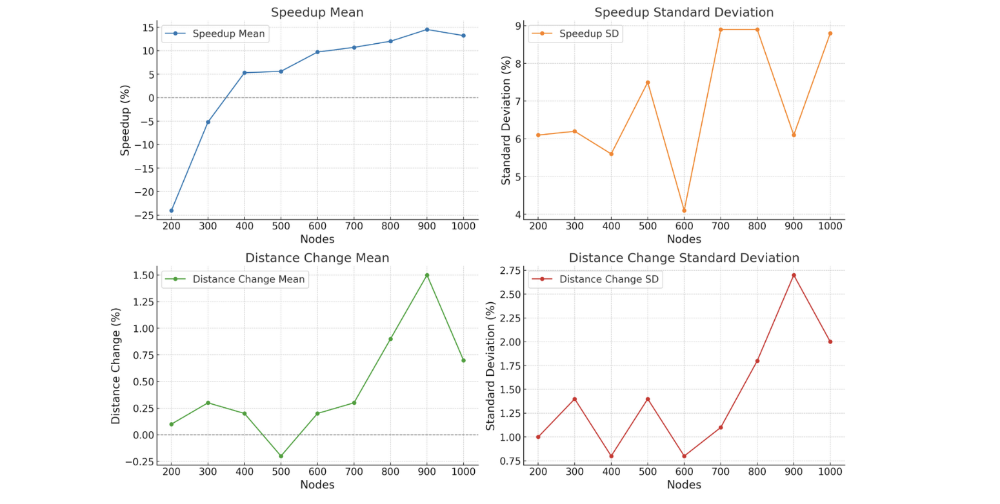

Scalable Last-Mile Delivery
Executive Summary
Developed as part of a highly selective National Science Foundation Research Experience for Undergraduates (NSF REU) program, this project tackles the immense computational complexity of the Vehicle Routing Problem (VRP) within joint truck-drone last-mile delivery networks. By mapping dense spatial distribution environments into high-scale graphs (N ≥ 1000 nodes), this research introduces a novel, two-stage optimization pipeline. A Graph Neural Network (GNN) is trained as a binary edge-classifier to aggressively prune non-critical travel paths, transforming a dense network into a sparse subgraph before executing a metaheuristic local search solver to compute near-optimal routes with heavily minimized runtime overhead.
Data Infrastructure & Graph-Theoretical Transformations
To establish a viable environment for operations research solvers, the research pipeline abstractly converts continuous physical flight dynamics into highly optimized discrete network structures:
- Continuous-to-Discrete Transformation: Developed the framework to map continuous-time, three-dimensional UAV trajectories—originally constrained by free-space path loss equations and strict 3D geofences—into a discrete, weighted graph G = (V, E). Nodes represent fixed base stations or delivery coordinates, while edge weights are mapped directly to Euclidean travel vectors.
- Deterministic Subgraph Precomputation: Engineered localized, brute-force routing engines using dynamic programming to solve exact minimum-weight Hamiltonian circuits for small-scale subgraphs (|V | = 5). This allowed for the rapid precomputation of candidate baseline paths that satisfy mission-critical time limits (λ) prior to physical flight orchestration.
- Lightweight Python Simulation: Programmed a specialized discrete-event simulator to mimic live hardware platform conditions. The simulator models environmental parameters, signal telemetry, and flight-path coordinates, allowing the routing agent to dynamically test and adjust behavior based on real-time Signal-to-Noise Ratio (SNR) and antenna proximity feedback loops.
[ Full-Mesh Spatial Graph ] [ GAT Edge Pruning ] [ DSU Connectivity Recovery ]
(Dense Network Complexity) (Self-Attention Weights) (Sparse Solvable Subgraph)
○ ─── ○ ○ ─── ○ ○ ─── ○
╱ │ ╳ │ ╲ ╱ ╲ ╱ ╲
○ ─╳─ ○ ─╳─ ○ ───► ○ ○ ─── ○ ───► ○ ○ ─── ○
╲ │ ╳ │ ╱ ╲ ╱ ╲ ╱
○ ─── ○ ○ ─── ○ ○ ─── ○GNN Architecture Engineering & Hyperparameter Optimization
While standard operations research algorithms scale poorly as node count increases, embedding a learning-driven edge classifier scales the optimization process. Deep learning execution focused on navigating spatial generalization boundaries:
- The Structural Bottleneck of GraphSAGE: Initial iterations leveraging the GraphSAGE framework utilized specialized max-pooling aggregation layers to combat oversmoothing across deep networks. While highly efficient on low-node networks, the mean-aggregate baseline failed to generalize structurally when exposed to massive, multi-cluster spatial scales.
- Transition to Graph Attention Networks (GAT): To address the generalization bottleneck, a Graph Attention Network (GAT) was implemented within a PyTorch Geometric pipeline accelerated via a T4 GPU on CUDA. By utilizing multi-head self-attention mechanisms, the GAT model learns to dynamically weight spatial adjacency values, effectively calculating edge probabilities across dense multi-node environments.
- Tuned GAT Hyperparameter Configuration: The pipeline optimized model stability and convergence using a strict multi-layer training protocol over 200 epochs:
| Deep Learning Parameter | Architectural Configuration | Operational Purpose |
|---|---|---|
| Model Architecture | Graph Attention Network (GAT) | Anisotropic edge propagation via self-attention mechanisms. |
| Hidden Channels | 128 Channels | Maximizes individual feature representation capacity per layer. |
| Structural Layers | 3 Sequential Layers | Balances receptive field depth with structural feature integrity. |
| Multi-Head Attention | 4 Heads | Stabilizes the learning process and captures multi-faceted spatial relations. |
| Regularization / Dropout | 0.3 Dropout Rate | Prevents overfitting on synthetic, geofenced training coordinate logs. |
| Learning Rate Optimization | 0.001 (Adam Optimizer) | Ensures stable gradient step execution across high-density graph structures. |
Experimental Benchmarking & Computational Results
The GAT-pruned sparse subgraphs were compiled and validated against the industrial-grade Google OR-Tools baseline solver over 500 independent experimental iterations on unseen test data. Post-pruning graph integrity was maintained by enforcing a top-12 edge filter per node paired with a Disjoint Set Union (DSU) connectivity recovery algorithm:
- The Non-Linear Speedup Scaling: The hybrid pipeline demonstrated distinct performance scaling behaviors. On small-scale 100-node networks, the GNN inference step introduced a temporary computation overhead (-211.4% runtime latency). However, as network density expanded to extreme scales, the edge-pruning pipeline achieved massive relative speedups.
- 1000-Node Performance Horizon: On high-density 1000-node routing problems, the GAT-pruned metaheuristic framework delivered an average 13.2% computational runtime speedup over the unpruned industrial baseline.
- Route Quality Preservation: The drastic reduction in search-space complexity preserved near-optimal route layouts, with the total tour length shifting by a nominal 0.7% average distance delta. Furthermore, due to the structural simplification of the edge matrix, the GNN pipeline identified a *shorter* total path than the standard OR-Tools baseline in approximately 31% of experimental runs.

Strategic Operations & Logistics Recommendations
The statistical validity of this hybrid framework yields critical operational design principles for next-generation automated distribution networks:
- Implement Learning-Driven Heuristics as Optimization Gateways: Prove that deep learning models do not need to solve the full combinatorial routing task alone. Instead, deploying GNN pipelines as lightning-fast preprocessing layers to strip away 90% of redundant search space maximizes the localized efficiency of downstream mathematical solvers.
- Accelerated Network Pruning Optimization: Future infrastructure modifications must focus on expediting the post-inference top-k edge filtering stage. Because sorting and heap allocation of edge probabilities currently consumes more pipeline time than deep learning forward passes, optimizing array manipulation scripts will yield an immediate, compounding system speedup.
- Augment Loss Functions for Multi-Objective Resilience: Scale the core model out of simulated environments by expanding the edge-classification objective function. Incorporating real-time communication telemetry, such as Received Signal Strength Indicators (RSSI), directly into the GNN loss function will allow the system to simultaneously minimize delivery distance while maximizing signal reliability along active flight corridors.